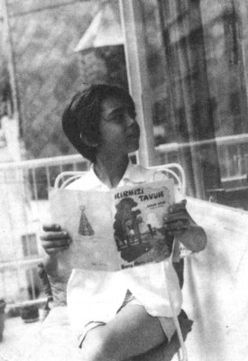

Başımı çevirip size baktım; etli taş örgüsü gece kalesi önünde, elinizde çok büyük, hiç bilmediğim bir harf ve gökten inip omuzlarınıza dokunan şimşek — ile güzeldiniz. Güzellik, fütursuz bir yetenekse / güzellik, biraz da akışkanın huysuzluğuyla gölgelenmek demekse / Başımı çevirip size baktım. Tanrıya giderken anayoldan ayrılan, karanlık bir patika kadar güzeldiniz.
Dayanamadım, peşinizden geldim. Bir fikrimde dolunay var, bir fikrimde hilal; artık hangisini beğenip seçerseniz.
